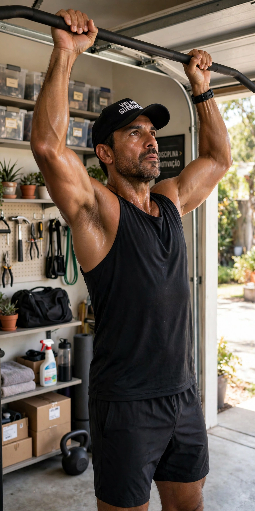
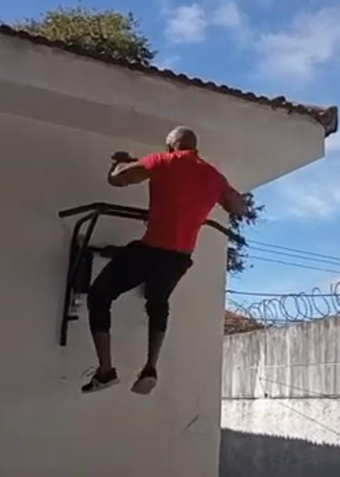
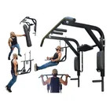
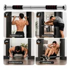
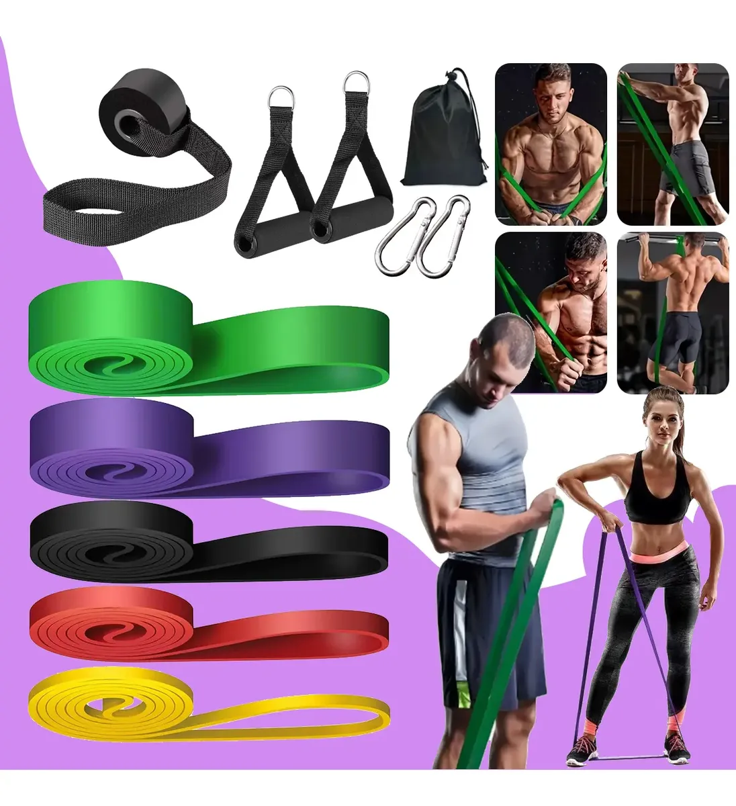
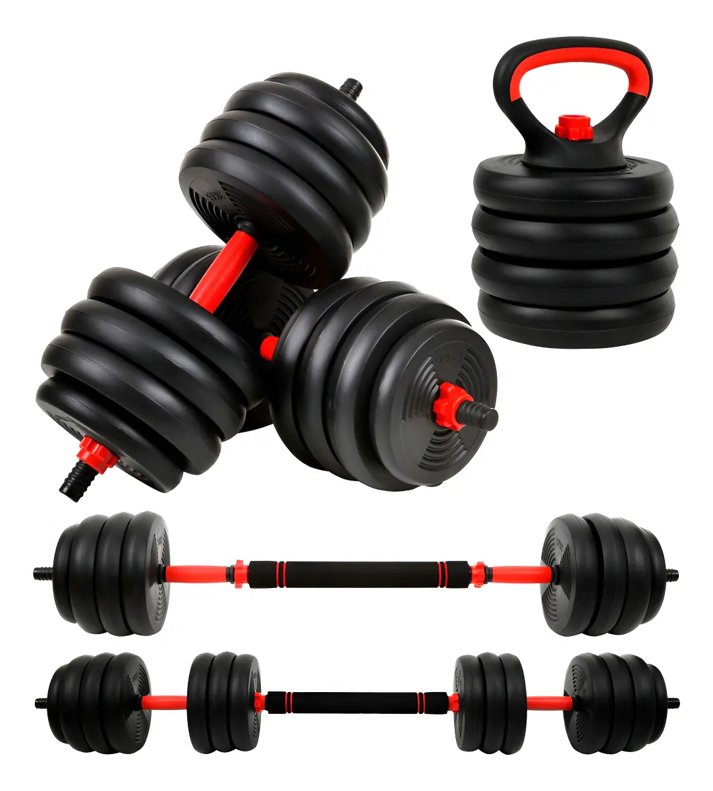

Treinar em Casa é Qualidade de Vida: O Guia Definitivo Após os 40 anos

Você não precisa de uma academia lotada para ter saúde. Após os 40 anos, treinar em casa deixa de ser uma quebra-galho e se torna a estratégia mais inteligente para quem busca qualidade de vida, disciplina e longevidade.
1. Por que Treinar em Casa Funciona Melhor Após os 40?
- Zero atrito: Sua academia fica a 30 segundos da sala. Não tem como "não dar tempo".
- Seu horário, suas regras: Treine 6h da manhã ou 21h da noite.
- Higiene e privacidade: Seu suor, seu equipamento, sua música.
- Economia brutal: Em 6 meses de mensalidade, você compra uma barra que dura 10 anos.
O dado que importa: Pessoas que treinam em casa têm 73% mais aderência após 6 meses do que quem treina em academia. E constância é tudo após os 40.
2. O Kit Mínimo do Velho Guerreiro (Menos de 2m²)

Com 3 itens você faz 50+ exercícios:
- 1. Barra Fixa de Parede (7 em 1): Puxadas, paralela, abdominal, muscle up. Trabalha costas, peito e bíceps como nenhum outro.
- 2. Kit de Elásticos Super Band: Para aquecer ombros e treinar pernas sem impacto no joelho.
- 3. Par de Halteres Ajustáveis 15kg: Complemento para ombros e braços.
Isso cabe na sua varanda ou garagem. Custo total: menos que 3 meses de academia.
3. Rotina Prática de 20 Minutos
Circuito Guerreiro (3 voltas):
- 5 a 8x Barra fixa
- 15x Flexão de braço
- 20x Agachamento livre
- 30 seg Prancha abdominal
- 15x Elástico remada
Pronto para montar seu canto de guerra?
Selecionei exatamente os 4 produtos que uso na minha rotina. Clique e veja o preço.

Barra 7 em 1
Barra de Porta
Kit Elásticos
Halteres 15kgConclusão: Pare de Terceirizar Sua Saúde
Comece hoje. 1 barra, 20 minutos, seu peso corporal. Daqui a 3 meses você vai agradecer.
Força e disciplina.
— Velho Guerreiro